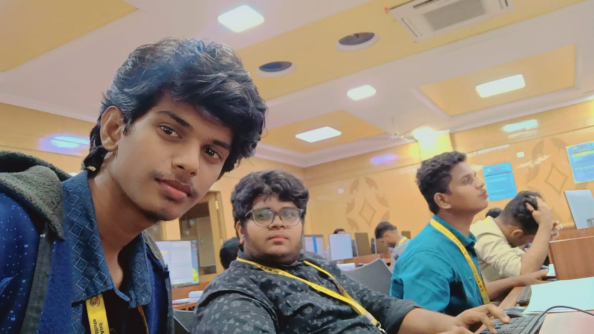

PRABHA'S FIRST PROJECT


FUTURE TECHIE'S
PRABHA || FARHAN || MANOJ
Prabhakaran, from Tiruttani, is pursuing a B.Tech in Computer Science and Engineering at Dr. MGR Educational and Research Institute, Chennai. Passionate about technology, he actively engages in coding, AI, and software development while participating in workshops and hackathons. With a drive to innovate, he aims to make a meaningful impact in the tech industry.
Farhan, a Chennai native, is a passionate B.Tech Computer Science and Engineering student at Dr. MGR Educational and Research Institute. Enthusiastic about technology, he focuses on areas like web development, software engineering, and AI. Known for his innovative thinking and teamwork, Farhan is determined to build a successful career in the tech industry while contributing to impactful projects.
Manoj, hailing from Madhavaram, is a dedicated B.Tech CSE student at Dr. MGR Educational and Research Institute, Chennai. With a knack for problem-solving and a passion for innovation, he delves into areas like programming, machine learning, and app development. Outside academics, Manoj enjoys collaborating on tech projects and envisions contributing to cutting-edge advancements in the industry.
FOR YOUR FUTURE USE :-
CONTACT US : 9047106638 , 9150446881 , 9344971806